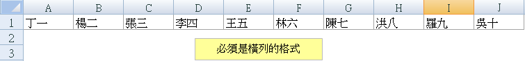
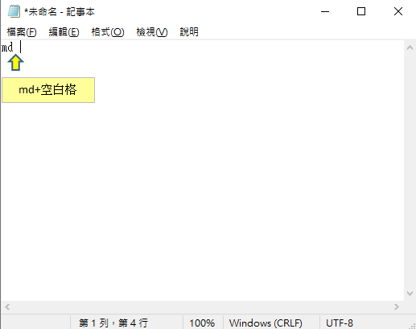
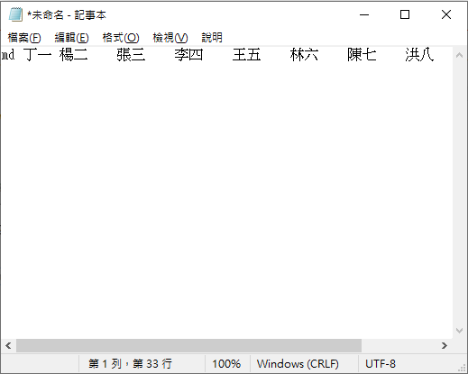
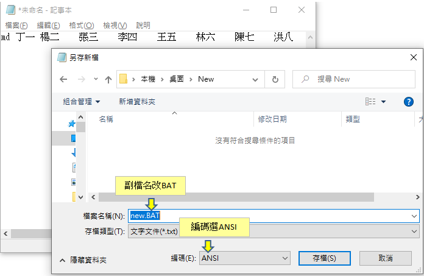
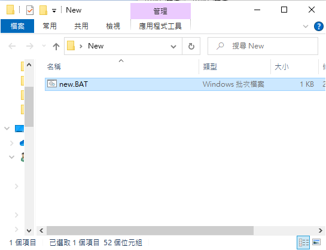
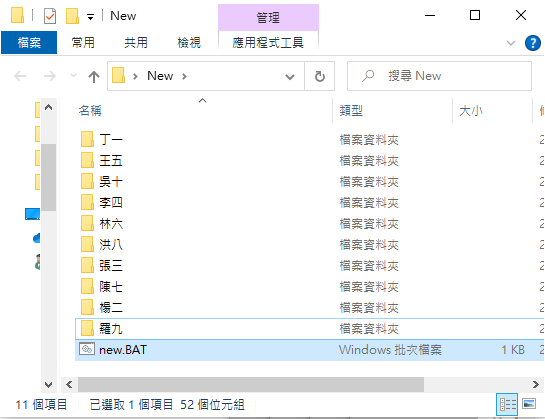

豪拜兒|Excel教學：快速批量建立員工資料夾，一分鐘內完成的方法！

假設今天我們需要為每一個員工建立獨立的資料夾，用來存放各個員工的相關資料。當員工人數不多時，可以逐一手動建立資料夾，但如果員工人數眾多呢？這時候，手動建立資料夾不僅耗時，還容易出錯。今天，我們要分享一個只需一分鐘就可以完成批量建立資料夾的方法，快來看看怎麼做吧！
在處理大量員工資料時，我們經常會遇到需要為每個員工建立單獨資料夾的情況。這些資料夾用於存放員工的個人檔案、績效報告、培訓記錄等。手動逐一建立資料夾可能還可以應付幾個員工，但面對數十、數百名員工時，這樣的操作方式顯然既低效又容易出錯。為了提高工作效率，我們可以借助 Excel 和簡單的批處理文件（BAT 文件），來快速批量建立資料夾。
這個方法非常簡單，只需要幾個步驟就能完成。首先，我們會在 Excel 中輸入所有員工的姓名，然後將這些姓名轉換成批處理命令，最後通過執行批處理文件來批量創建資料夾。整個過程不到一分鐘，便能輕鬆完成數百個資料夾的建立。這種方法不僅節省了大量時間，還避免了手動操作可能帶來的錯誤。
接下來，我們將詳細介紹如何使用這個方法來批量建立員工資料夾。通過這篇教學文章，你將學會如何利用 Excel 和批處理文件，在短短幾分鐘內完成原本需要耗費大量時間的操作。這不僅能提高你的工作效率，還能確保每個員工資料夾都能準確無誤地建立起來。
快來一起學習這個高效的方法吧！希望這篇文章能夠幫助你在日常工作中更加輕鬆高效地管理員工資料。
首先在 Excel 輸入要建立資料夾的人名，必需是橫列的格式
在 Excel 中，將要建立資料夾的每位員工姓名依橫列排列好。

複製到記事本，先輸入"md “，md 後必須有個空白格
將這些姓名資料複製到記事本中，並在每個姓名之前加上 md，注意後面必須有一個空白格。

接著框選 Excel 橫列全部的人名資料，點選複製，再到記事本直接貼上複製的名字
在 Excel 中框選整列姓名資料，然後複製到記事本，直接粘貼這些名字。記事本會自動在每個名字之間留下一個空格，這部分不需要進行任何修改。

選擇另存新檔，存檔時附檔名改成 BAT，並將編碼選為 ANSI
將記事本中的內容保存為一個新的批處理檔案（BAT 檔案）。請確保在另存新檔時，將文件類型選擇為批處理文件（BAT），並將編碼設置為 ANSI。

此時資料夾內已經出現一個副檔名為 BAT 的檔案
完成保存後，你的目標資料夾中會出現一個名為 BAT 的批處理文件。

對這個檔案進行左鍵雙擊，可以看到自動建立了每位員工的資料夾
單擊這個 BAT 檔案，它將自動根據記事本中的姓名列表，為每位員工建立對應的資料夾。

設置顯示副檔名
如果你的電腦設定中看不到檔案的副檔名，請點擊「檢視」選項卡，然後勾選「副檔名」，這樣就可以確保正確顯示 BAT 檔案。
這個方法不僅快速又有效，還能確保所有資料夾的命名一致性和準確性。無論員工人數多少，都可以輕鬆應對。現在就試試看吧！
為什麼需要學習 Excel？難道不可以依賴 AI 工具嗎？
過去，學習 Excel 不僅能提升數據處理和分析能力，還能顯著提高工作效率。掌握各種 Excel 公式和 VBA 技巧，可以有效提升工作效率，通過自動化功能減少重複性工作。此外，熟練掌握 Excel 也能增加就業競爭力，因為許多職位，尤其是在財務、數據分析和行政等領域，都將其視為基本要求。
隨著 AI 技術的問世，與 AI 工具合作的情況下，我們可能不再需要從零開始編寫公式或 VBA 程式。例如，免費版的 ChatGPT-3.5 能生成和解釋 Excel 中的常見公式，如 SUM、VLOOKUP、IF 等，並幫助解決基本的數據處理問題。付費版的 ChatGPT-4.0 在公式生成和解釋方面同樣出色，能更好地處理複雜的公式和多步驟的數據分析任務，並提供更精確的幫助，還能協助生成各類型的圖表。
然而，對於 Excel 完全不熟悉的人，仍然難以與 AI 有效溝通並驗證結果。因此，小編認為，為了更好地與 AI 協作，對 Excel 的基本了解仍然是必要的。建議可以參考以下Hahow學習資源：
為什麼選擇 Hahow 線上課程平台？
Hahow 是一個受歡迎的線上課程平台，提供各種專業課程。選擇 Hahow，可以享受靈活的學習方式，隨時隨地都可以學習，非常適合忙碌的工作人士。平台上的課程由專業講師授課，內容豐富且實用。還可以與其他學員交流學習心得，共同進步。相比坊間動輒上萬元的課程，Hahow 的線上課程不僅省去交通的舟車勞頓，更有價格實惠的絕對優勢。
更多文章
想要更深入了解Excel的習性和如何照顧牠們嗎？請點擊以下連結閱讀更多相關文章。點我前往更多文章